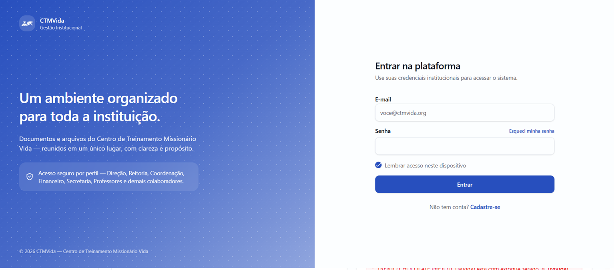
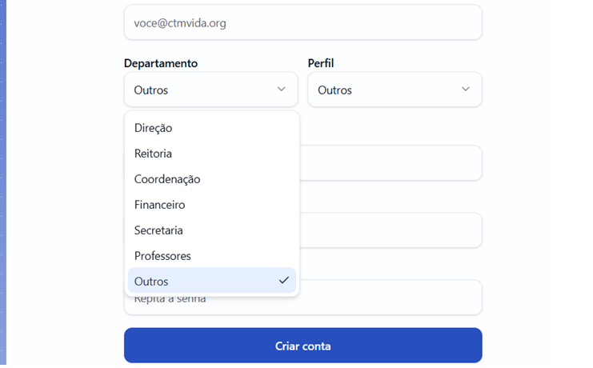
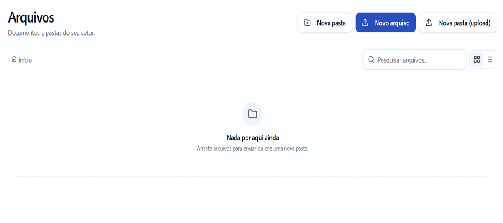
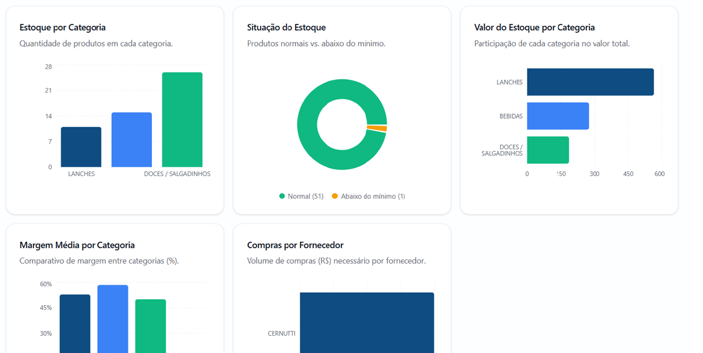
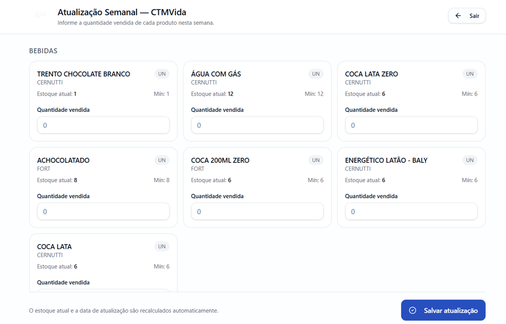
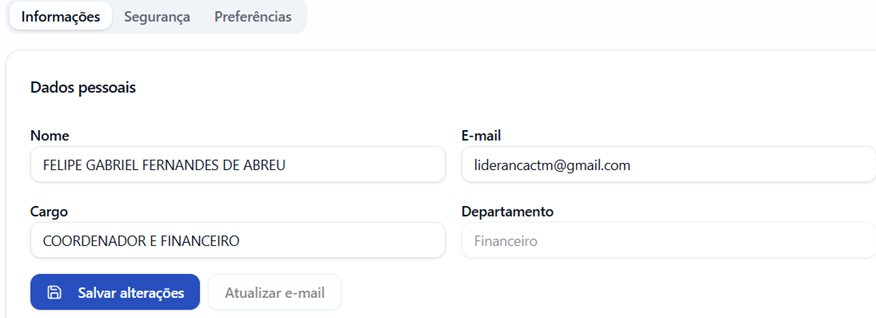

Transformando a Gestão do CTMVida através da Tecnologia
A NexEmpreende está conduzindo a digitalização administrativa da instituição, desenvolvendo sistemas próprios para aumentar organização, segurança e eficiência operacional — construindo uma base tecnológica sólida para o futuro do CTMVida.

Principais Entregas Realizadas
Um panorama do que já foi construído até o momento.
-
Sistema Administrativo iniciado
Início do desenvolvimento da plataforma administrativa responsável pela organização de arquivos, usuários e setores da instituição.
-
Sistema de Login Seguro
Implementação de login, cadastro de usuários, controle de acesso e camadas de segurança para proteger os dados institucionais.

-
Organização por Setores
Estrutura dividida em Direção, Secretaria, Financeiro, Coordenação, Professores e outros, com responsabilidades específicas para cada área.

-
Armazenamento de Arquivos
Upload de arquivos, organização por pastas, armazenamento seguro e compartilhamento interno entre os setores.

-
Controle de Permissões
Somente o Diretor possui permissão para excluir arquivos do sistema, aumentando a segurança e a governança institucional.
-
Administração das Cantinas
Módulo específico para o setor financeiro, permitindo administrar as cantinas da instituição de forma centralizada.
-
Cadastro de Produtos
Cadastro, edição, exclusão e atualização de produtos das cantinas, com controle completo do catálogo.
-
Infraestrutura
Sistema hospedado na plataforma Render: hospedagem gratuita, fácil manutenção, acesso online e poucas limitações para o estágio atual do projeto.
Prints do Sistema
Visão geral das telas já desenvolvidas.



Demonstração do Sistema
Assista a uma visão geral em movimento da plataforma.
Próximas Etapas
O que já foi entregue e o que está por vir.